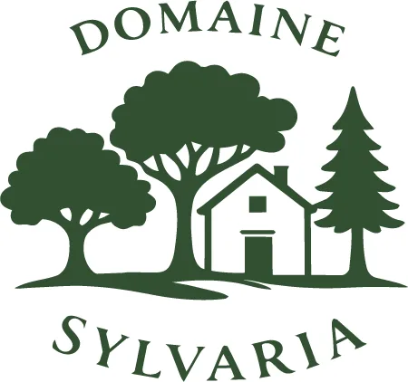

Aller au contenu

Domaine Sylvaria
☰ Menu
Accueil
Hébergements
Réserver
Services
Repas
Avis
Autour de nous
Contact
Mentions légales
Repas et petit-déjeuner
Petit-déjeuner
Tous les jours · Sur réservation
Petit-déjeuner
Pain au chocolat
Allergènes : gluten, œufs, lait
Croissant
Allergènes : gluten, œufs, lait
Une allergie, un régime particulier ? Prévenez-nous : la liste des allergènes de chaque plat est disponible sur demande.
Réserver un repas avec mon séjour